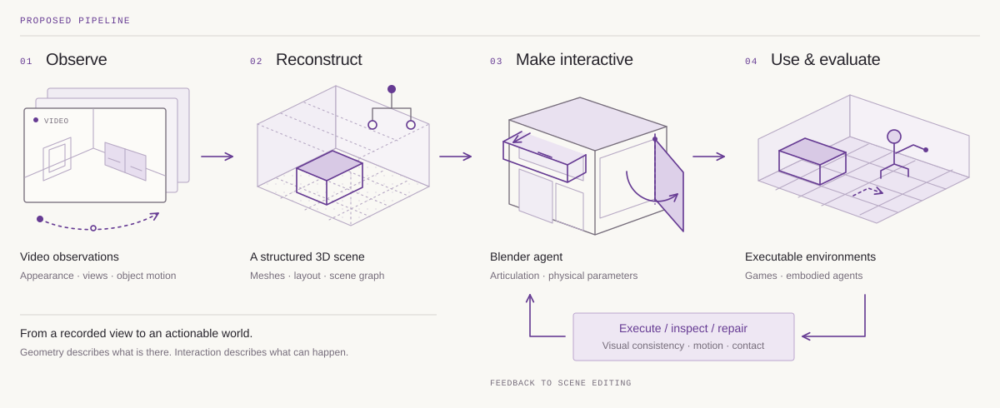
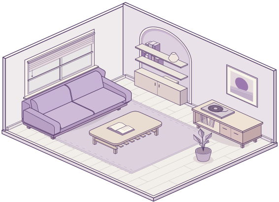

庭院书房
镜头从落地窗移向书柜。试着点开一扇柜门，或拉出一个抽屉，再看它怎样随着镜头移动留在原位。
Video · Interaction · Worlds
从视频出发，构建可交互的世界
让重建场景成为可以行动、试验与学习的环境。
镜头从落地窗移向书柜。试着点开一扇柜门，或拉出一个抽屉，再看它怎样随着镜头移动留在原位。
镜头还在走，你可以拉开中岛的抽屉、打开柜门，或试着放下洗碗机的门板。
02 / Overview
视频记录了世界的外观，也留下了物体结构与运动方式的线索。Roomhub 探索如何利用这些线索，把视觉重建转化为可编辑、可操作、可验证的 3D 环境。
我们希望连接视觉重建、智能体装配与交互测试，让重建出来的世界能够承载游戏玩法、具身学习和可重复的实验。
03 / Architecture
恢复场景结构，为部件赋予行为，再通过实际执行检验这些行为。测试中发现的问题，会回到装配环节继续修正。

左右滑动查看完整架构
从观测估计几何、相机位姿与物体结构，连接视觉外观和可编辑的几何表示。
让智能体识别活动部件，设置关节、运动范围、碰撞几何与物理参数。
在环境中执行交互、观察结果，以失败案例指导下一轮修改。
04 / Research questions
我们关注如何共同检验视觉一致性、行为可执行性与任务层面的可用性。
| 层次 | 研究问题 | 观察什么 |
|---|---|---|
| 01结构 | 能否恢复决定物体如何工作的部件与空间关系？ | 几何形状、部件边界、关节位置与场景布局。 |
| 02行为 | 物体在开合、推拉和接触时，能否作出合理响应？ | 运动范围、接触关系、穿模与物理稳定性。 |
| 03任务 | 单个物体的交互，能否组合成可重复的任务？ | 动作序列、状态变化与任务完成条件。 |
05 / Vision
我们从房间出发，研究的问题则面向更广泛的环境：只要其中有物体、有动作，也有动作带来的结果。

我们希望，一段自己家的视频就能成为可游玩的场景：在 The Sims 这样的游戏里，重新布置它，或者住进去。
现实空间 → 可游玩的世界构建源自真实空间的练习环境，让智能体探索物体操作、接触和多步任务，为能力向现实世界迁移提供基础。
观察 → 练习 → 迁移用可执行任务研究物体属性与交互结构如何影响任务成功，让失败原因能够被检查和复现。
动作 → 结果 → 证据06 / Project status